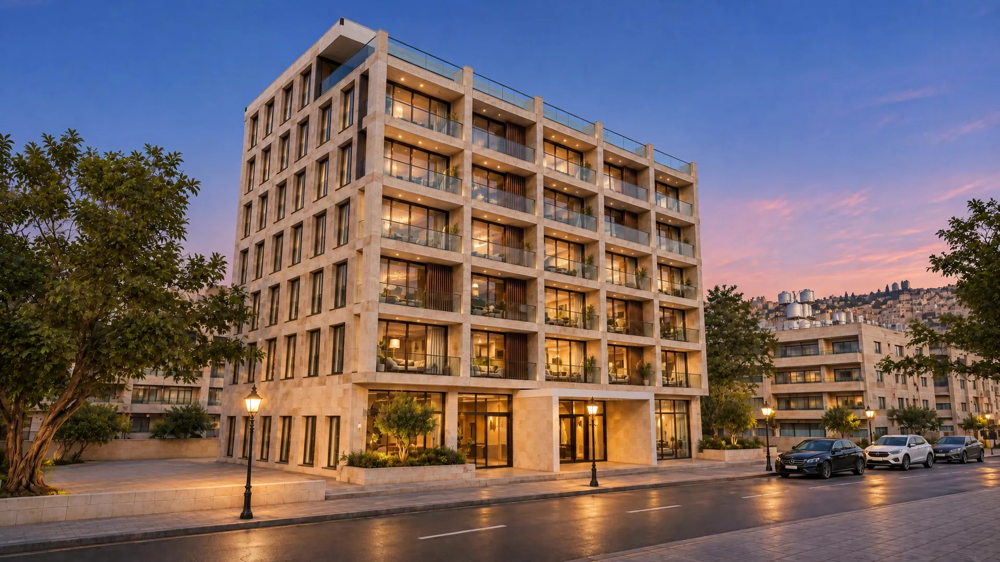
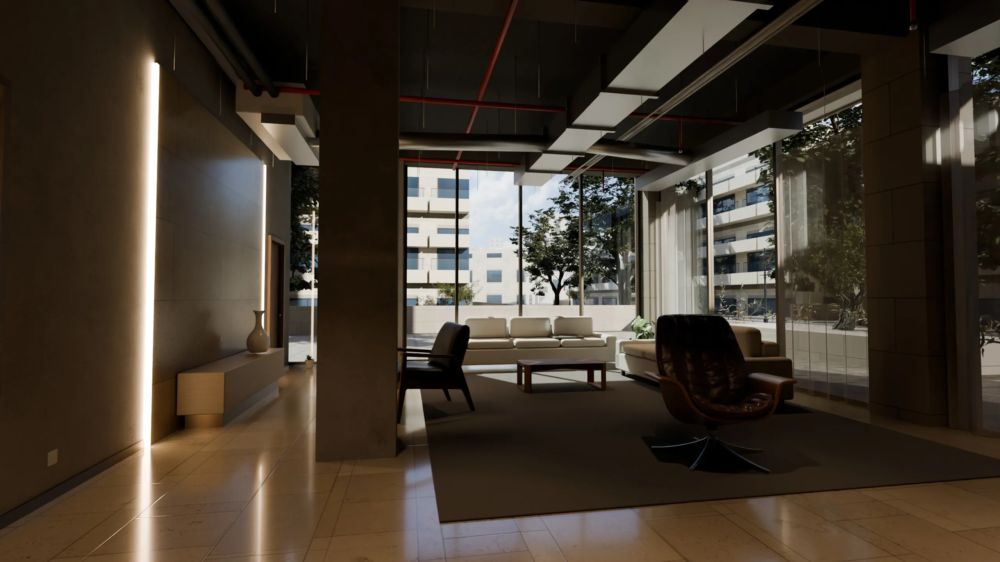
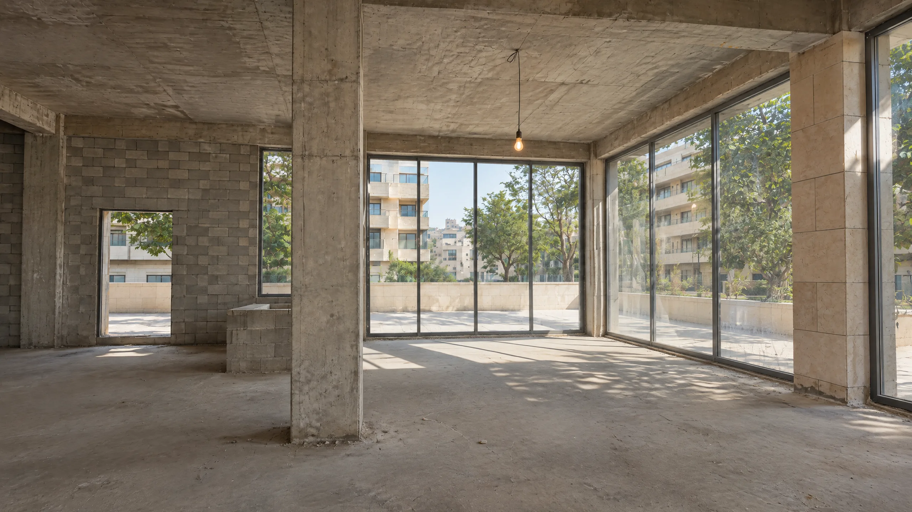
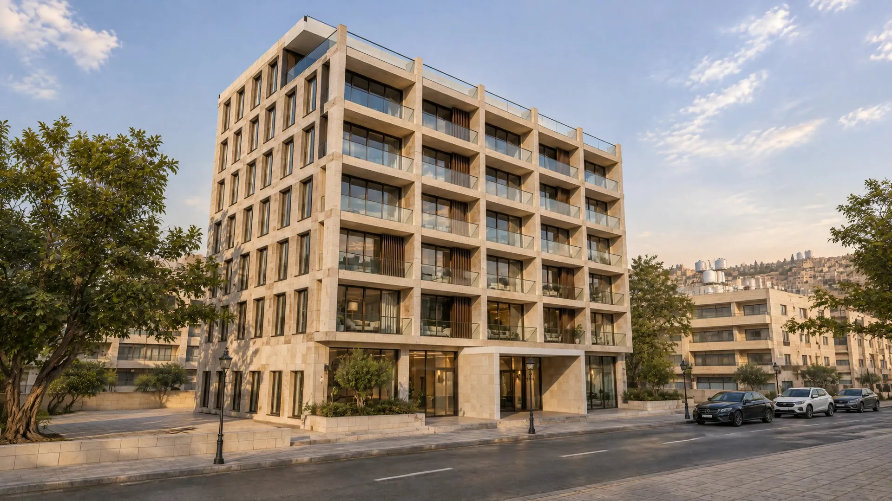

تصوّر معماري · Blender + Higgsfield AIArchitectural visualization · Blender + Higgsfield AIنبني ما يدوم.We build what lasts.
تميّز هندسي، مبنيّ على الثقة. شاهد مبنى واحداً يُبنى أمامك وسط المدينة، من أرض فارغة إلى مساحة جاهزة للسكن.Engineering excellence, built on trust. Watch one building rise in the middle of the city, from an empty plot to a space ready to live in.
الغرفة نفسها.
تسع مراحل.The same room.
Nine stages.


ما فوق السقف: من النموذج الهندسي ثلاثي الأبعادAbove the ceiling: from the 3D engineering modelما خلف السقف.Behind the ceiling.
نفس الغرفة ونفس الكاميرا. نرفع السقف المعلّق لنكشف ما نُنفّذه قبل التشطيب.Same room, same camera. We lift the suspended ceiling to show what we install before the finishes.
قبل وبعد.Before / After.
اسحب الخط لترى الهيكل الخام والمساحة المكتملة من نفس النقطة.Drag the line to compare the raw structure and the finished space from the same point.

↔
RAWFINISHED
ومن أرض الواقع.And on real sites.
صور من مشاريع نفّذتها JEC أو تنفّذها الآن، كما نُشرت على حسابها في إنستغرام.Photographs of projects JEC has delivered or is delivering, as published on its Instagram.
المبنى في الأعلى تصوّر معماري صُمّم لهذا الموقع بالنمذجة ثلاثية الأبعاد والذكاء الاصطناعي، وليس مشروعًا منفّذًا.The building above is an architectural visualization made for this website with 3D modelling and AI, not a completed project.

نبني ما يدوم.We build what lasts.
راسلنا على إنستغرام لطلب عرض سعر أو زيارة موقع.Message us on Instagram for a quote or a site visit.
@jallad.contracting →نسخة تجريبية للموافقة — المبنى المعروض تصوّر معماري، وليس مشروعاً منفّذاً.Proof of concept for approval — the building shown is an architectural visualization, not a completed project.